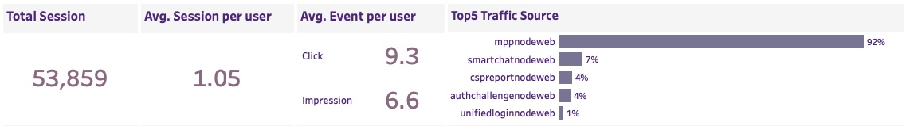
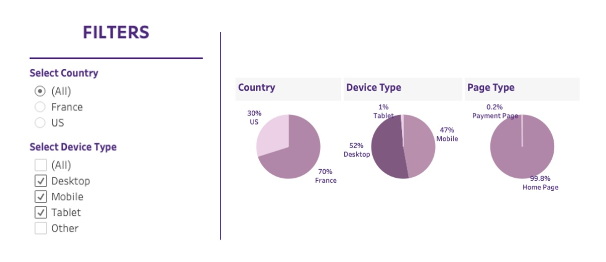
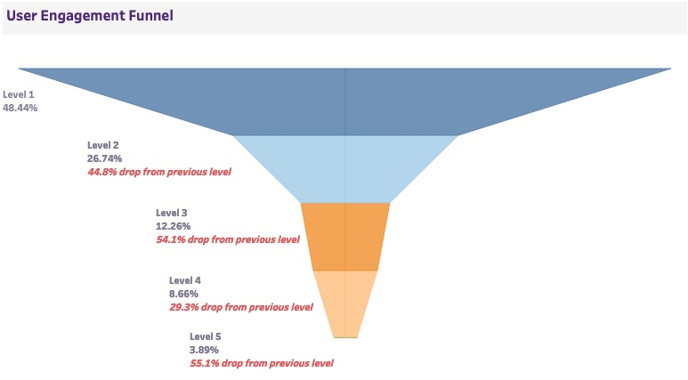
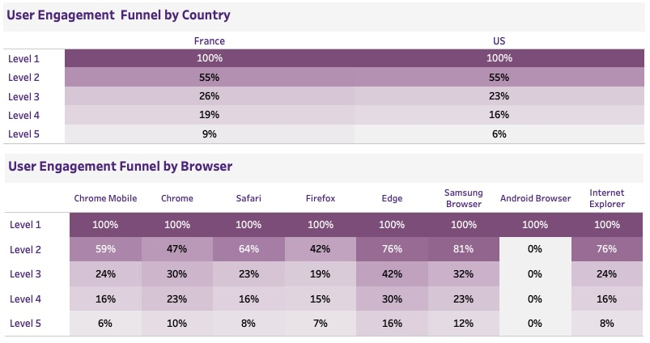

I Built a KPI Dashboard That Tells You Exactly Where Your Website Is Leaking Money
Tableau | Business Intelligence | Data Visualization
No SQL. No pivot tables. Just straight insight.
A lot of dashboards look impressive. But when it’s time to actually make a decision, they fall flat. I wanted to build something different—an interactive, easy-to-use dashboard that helps marketing, brand, and product teams find answers fast.
The Goal: One Screen, Full Clarity
This project wasn’t about showcasing technical flair. It was about making metrics actually useful. I built this dashboard with a simple goal: help non-technical teams quickly understand what’s working—and what’s not—across their digital campaigns.
Everything lives on one screen. Teams can slice by country, device, funnel level, and more. It updates in real-time with their filters. But more importantly, it tells a clear story without needing to explain itself.
Start at the Top: What’s the Pulse?
Right away, teams can see the key numbers:
• Total sessions
• Average session per user
• Events per user (clicks and impressions)
• Top traffic sources and browsers
It’s not just metrics for the sake of it. It’s designed to tell you if your campaign is getting reach—and whether people are actually doing anything once they land.
One quick scan and you know whether engagement is healthy or falling off a cliff.

Drill Down by Audience Without Getting Lost
Marketing teams don’t always speak in browser types or traffic IDs. So I made the filters clean: country, device, and funnel level. You can toggle to just mobile users in the US or look at how desktop users in France behave—all with one click.
It’s interactive, but not overwhelming. The filters are meant to guide curiosity, not drown people in options.

The Funnel: Where You’re Losing People
Here’s where things get serious. The user engagement funnel tells the real story behind the metrics. You see exactly how many users dropped off at each step. No guesswork.
• Level 1 starts strong at 48.44% of total sessions
• But Level 2 drops by 44.8%
• Level 3? Another 54.1% drop
• And so on...Monday, September 1 (Labor Day)
You don’t need to be a data scientist to see where the problem is. If 50% of users are leaving between Level 2 and 3, that’s where you start testing. That’s where you rethink copy, layout, or offers.

The Breakdown: Which Audience Is Struggling?
The funnel is also broken out by country and browser—because context matters. Maybe Chrome Mobile users convert fine, but Firefox users bail early. Or maybe US traffic is dropping off earlier than France.
These details give teams direction. It’s not just "optimize the funnel." It's "optimize Level 3 for Safari users in the US." That’s where money gets saved—or made.

Why This Matters
This dashboard isn’t flashy. It’s functional. It gives marketers, brand managers, and product folks the power to diagnose, prioritize, and act—without needing a data team to walk them through it.
Good dashboards don’t just show data. They show decisions. This one does exactly that.